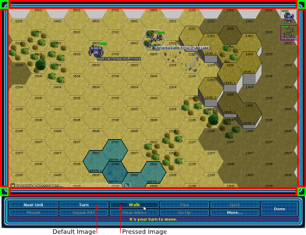

The skin specifications for Megamek can be found in mmconf/defaultSkin.xml.
The schema for this XML file can be found in mmconfg/skinSchema.xls. Skin
specifications consist of multiple UI_Element tags which consist of a name, a
border specification, and zero or more background_image tags. The name
identifies which UI elements this skin specification applies to. The
defaultButton and defaultElement specifications are special in that they are
used to specify the skin for any unspecified MegamekButton and any UI component
that uses a MegamekBorder but doesn't have an explicit UI_element tag.
Border tags define what images are used in the border for the UI component.
Currently, there are 8 possible images: 4 corners, and 4 images that go
in between the corners. The images that go in between corners are referred to as
edges. The image below illustrates these: each corner is highlighted in green and each edge is highlighted in red.

Additionally, the two background images for buttons are illustrated.